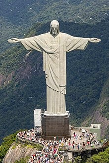

Christ the Redeemer (Portuguese: Cristo Redentor, standard Brazilian Portuguese: ['k?istu ?ed?'to?]) is an Art Deco statue of Jesus Christ in Rio de Janeiro, Brazil, created by French-Polish sculptor Paul Landowski and built by Brazilian engineer Heitor da Silva Costa, in collaboration with French engineer Albert Caquot. Romanian sculptor Gheorghe Leonida sculpted the face. Constructed between 1922 and 1931, the statue is 30 metres (98 ft) high, excluding its 8-metre (26 ft) pedestal. The arms stretch 28 metres (92 ft) wide.[1][2] It is made of reinforced concrete and soapstone.[3][4][5] Christ The Redeemer differs considerably from its original design, as the initial plan was a large Christ with a globe in one hand and a cross in the other. Although the project organisers originally accepted the design, it later changed to the statue of today, with the arms spread out wide. The statue weighs 635 metric tons (625 long, 700 short tons), and is located at the peak of the 700-metre (2,300 ft) Corcovado mountain in the Tijuca National Park overlooking the city of Rio de Janeiro.
